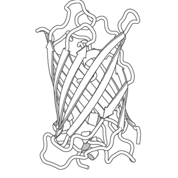

on
Resize PyMOL images larger keeping the outline bold
Well-trained PyMOLer may know better solutions.
If you know better solutions, I’ll appreciate if you comment here.
Rendering images with outline by PyMOL
I like to render this kind of outlined images.

which uses:
set ray_trace_mode , 1
However, this outline become (relatively) thin when the images are rendered in high resolution.
For example,
ray 1200, 1200
yields something like this.
{kind=link}
The outline got thin.
It’s said that changing ray_trace_gain will make the line bold, but this gives additional unwanted lines.
waifu2x
waifu2x is a super-resolution system. I installed it locally.
Results
Image got bigger with outline kept bold as I wanted.
{kind=link}
But, you need to check if there’s nothing wrong beucase the image is transformed by undescribable functions.
The example below is 1MBN, but the sticks for residue 97 (HIS) look overlapping to the background spheres, which makes it look tranparent.
{kind=link}
Software used
- waifu2x
- pymol